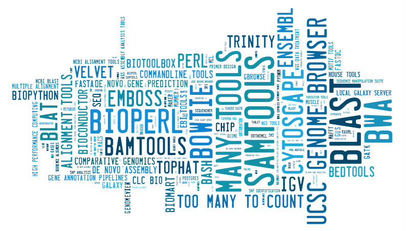

## About You
What is your relationship to GMOD?
- [Table](#tbl-0)
- [Chart](#chart-0)
| Relationship | N respondents |
|----|----|
| User | 27 |
| Developer of GMOD components | 3 |
| Sys admin (installing/configuring/maintaining, etc., GMOD tools) | 7 |
| User, developer | 6 |
| User, developer, sys admin | 8 |
| User, sys admin | 14 |
| Developer, sys admin | 0 |
| None of the above | 1 |
Where are you located?
See the [GMODgeosurveyome map](mapping.html).
## Your GMOD Usage
How do you use GMOD?
- [Table](#tbl-1)
- [Chart](#chart-1)
| GMOD usage | N respondents |
|----|----|
| Currently use (or provide for users) one or more GMOD components | 58 |
| Planning to use (or provide) GMOD components | 5 |
| Assessing GMOD and other software to see what fits our use cases best | 3 |
How do you use GMOD?
What type(s) of biological data do you use or plan to use GMOD tools to
manage, visualize, or annotate?
- [Table](#tbl-2)
- [Chart](#chart-2)
| | |
|----------------------------------------|-----------|
| Data type | Frequency |
| Assembled sequence | 52 |
| Next generation sequences | 52 |
| Comparative genomics | 38 |
| Annotation pipelines | 27 |
| Other expression data | 25 |
| Manual genome annotation | 25 |
| Ontologies | 24 |
| Community annotation | 20 |
| Phenotypes | 19 |
| Microarrays | 15 |
| Population genomics | 14 |
| Mapping (physical, QTL, genetic, etc.) | 14 |
| Pathways | 13 |
| Workflow / Integration | 13 |
| Literature curation | 12 |
| Phylogeny | 8 |
| Lines or stocks | 8 |
| Proteomics | 5 |
| Anatomy | 5 |
| Community directory | 0 |
Other
- ChIP-Seq data on histone modifications
- Fly stock data
- Genotype data (marker alleles)
- Natural diversity data \[localities, collectors, environmental
measurements\]
- RNAi
- phenotypes, genotypes
What do you find most valuable about the GMOD project and/or its
components?
- The community (developers and users) : **12**
- Open source : **11**
- GBrowse : **9**
- ease of use : **7**
- ease of set up : **6**
- It's free : **6**
- helpful, active mailing lists : **5**
- active development : **5**
- Chado : **4**
- code maturity : **4**
- customizable, flexible tools : **4**
- integrated, interoperable components : **4**
- the tools have already been developed : **3**
- annotation visualization : **2**
- components are modular and easy to extend : **2**
- ease of configuration : **2**
- Galaxy : **2**
- great support : **3**
- knowledgable help desk : **2**
- online tools : **2**
- stable, long-lived project : **2**
- standard data formats : **2**
- well documented : **2**
- Apollo : **1**
- JBrowse : **1**
- genome annotation curation tools : **1**
- ontology-driven : **1**
- can contribute code for others to use : **1**
- range of organisms and organizations using it : **1**
- the components are generic : **1**
- the project is directed by user needs : **1**
- the range of tools : **1**
What aspects of the GMOD project are you least satisfied with? How could
we make GMOD and its components more useful or easier to use?
- Documentation quality is variable : **11**
- improve AWS documentation : **1**
- create more tutorials : **1**
- more biologist-friendly tutorials : **1**
- improve Chado genetic module docs : **1**
- documentation is hard to find : **1**
- GBrowse installation docs are out of date, incomplete : **1**
- tutorials lag behind software : **1**
- get users/devs more involved in wikis - topics recur on gbrowse
mailing list, should be consolidated on wiki : **1**
- need more best practices to aid newbies : **1**
- Tool administration : **8**
- configuration is difficult : **3**
- dependencies make installing/upgrading difficult : **2**
- BioPerl makes installing/upgrading difficult : **2**
- GBrowse install is time-consuming : **1**
- there should be installation webinars : **1**
- Tools should be more interoperable/interlinked : **5**
- GBrowse and Tripal : **1**
- there should be a proper website to link all data and tools : **1**
- all tools should support Chado : **1**
- make it easier for users of one MOD to use another MOD : **1**
- Scope
- GFF3/Chado need a SOFA-compliant prokaryotic gene model : **2**
- support for circular molecules in Chado, GBrowse : **2**
- better phylogenetic support in Chado - phenotype schema seems to be
biased towards flies : **1**
- representation of phenotypes, anatomies : **1**
- support for prok genomes in Chado, GBrowse : **1**
- transposable element model curation (WebApollo) support : **1**
- transposable element model support in GFF3 : **1**
- transposable element model support in ontologies : **1**
- transposable element model visualization support : **1**
- Tool-related
- more performance optimization : **2**
- synteny browsing is problematic : **2**
- unmaintained/unsupported projects (e.g. CMap) : **2**
- code quality - bug fix releases often break other things : **1**
- it is difficult to extract sequence and annotation data : **1**
- GBrowse configuration files should be more modular and reusable :
**1**
- GBrowse/JBrowse - better instance management, particularly single
instance for multiple projects : **1**
- provide VMs with current version of tool : **1**
- discontinuation of Wormmart and unstable biomarts : **1**
- queues waiting for job to be done (Galaxy) : **1**
- response on mailing lists can be slow : **1**
- user friendly formats for bulk data DL (e.g. from BLAST) : **1**
Are there any tools or functionality that you think are missing from
GMOD?
- More breeder resources : **2**
- breeders: marker-assisted breeding techniques : **1**
- breeders: pedigree management, phenotype : **1**
- Tool-related:
- assembly tools : **1**
- better multiple genome visualization : **1**
- blast server : **1**
- cloud services : **1**
- command-line workflow management tool : **1**
- data curation system (e.g. delete artefacts via GUI/tool, not from
GFF3) : **1**
- general purpose genome annotation library for use with GMOD-based
data : **1**
- interactive visualisations : **1**
- comparative and phylogenetic tools : **1**
- literature curation pipelines (beyond Textpresso) : **1**
- more NGS tools : **1**
- tools to represent gene regulatory networks : **1**
- Expanding GMOD's scope:
- Chado : **2**
- natural diversity module needs more development and support :
**1**
- publication module needs development and documentation : **1**
- support for embryo anatomies, phenotypes : **1**
- LIMS (laboratory information management system) : **1**
- storing RNAi experiments in Tripal : **1**
- support for genome features other than genes (transposable
elements!) : **1**
- systems biology/systems genetics - network biology module for Tripal
: **1**
- variant (SNPs) annotation, integration with protein structure :
**1**
- Integration:
- integration with R : **1**
- pipelines for common tools (e.g. Galaxy/Chado integration) : **1**
- shared sign on via SAML2 btwn Tripal, GBrowse : **1**
- transparent connectivity btwn tools (e.g. GBrowse/CMap) : **1**
- better comparisons of RNAseq/gene expression differences : **1**
- characterizn of gene lists : **1**
- show BLAST hits in GBrowse : **1**
- permission management (GBrowse, Chado) : **1**
- allow relational data queries : **1**
- support for Chado ontologies in custom content types (cck) in Tripal :
**1**
What would you like to see GMOD work on in 2013 and 2014?
- Documentation : **5**
- guidelines on best practices : **1**
- installation, functionality, troubleshooting : **1**
- tools on the wiki : **3**
- clean up tool list on wiki (clearly mark tools as not currently
maintained, etc.) : **2**
- comparison charts between tools with similar functionality : **1**
- non-wiki website w/ clear tool pages that are easier to navigate :
**1**
- more examples, detail in GBrowse docs : **1**
- update and clean up wiki : **1**
- Comparative genomics : **4**
- gene family and synteny comparisons : **1**
- ortholog cluster information : **1**
- Tool integration : **4**
- create a fully integrated genome annotation, curation, visulation
pipeline - like GitC but with MAKER, Apollo, GBrowse, Tripal all
reading and writing to the same Chado DB : **2**
- Chado backend for WebApollo : **1**
- integrate GBrowse and CMap : **1**
- integrate GMOD and Galaxy - like UCSC tracks : **1**
- make the best, most beautiful genome/seq browser : **1**
- JBrowse : **3**
- data set size : **1**
- track management, subtracks : **1**
- GBrowse : **2**
- increase speed, performance : **2**
- more support for population genomics, data visualization : **1**
- make it more interactive, responsive : **1**
- Galaxy : **1**
- WebApollo : **1**
- Tool-related
- circular genome browsers : **1**
- connect genomics data w/ structural data : **1**
- easy deployment of Chado and tools to server : **1**
- encourage users to make Chado instances available to the public, esp
those w/ whole genomes : **1**
- literature curation pipelines : **1**
- NGS visualisation tools : **1**
- NGS-related development and add-ons : **1**
- sequencing data visualisation (inc. improving performance
data/speed) : **1**
- support for NGS data formats (BAM, VCF, gene expr) : **1**
- mobile device support : **1**
- Chado
- extend Chado/Tripal, e.g. store RNAi expts : **1**
- metadata: how to capture metadata to make easier to share across
projects : **1**
- natural diversity module : **1**
- organism module - current Chado organism table is not good for
comparative genomics, communities of organisms, and documenting
relationships between species : **1**
- extend GMOD to non-model organisms : **1**
- more pre-release cross-platform tests : **1**
What other bioinformatics tools do you use in your day-to-day work?

## GMOD Help Desk
Please rate the performance of the GMOD Help Desk in the following
areas.
- [Table](#tbl-3)
- [Chart](#chart-3)
| 1 (poor) |
2 | 3 (average) |
4 | 5 (outstanding) |
Mean | |
|---|---|---|---|---|---|---|
| Answering user questions: providing helpful and timely answers to help queries | 0 | 0 | 9 | 23 | 11 | 4.05 |
| GMOD website: maintaining the GMOD website and making it useful and relevant for the GMOD community | 0 | 1 | 11 | 32 | 6 | 3.86 |
| Education: providing online and in person training on GMOD and components | 0 | 2 | 10 | 24 | 8 | 3.86 |
| Outreach and community building: spreading the words about GMOD; encouraging an active community of GMOD developers and users | 0 | 3 | 11 | 26 | 7 | 3.79 |
| Developer support: enhancing documentation, integration and beta testing services; bridging the developer-user gap | 0 | 7 | 19 | 14 | 6 | 3.41 |
Which of these help desk activities is most important to you?
- [Table](#tbl-4)
- [Chart](#chart-4)
| 1 (least important) |
2 | 3 | 4 | 5 (most important) |
Mean | |
|---|---|---|---|---|---|---|
| Answering user questions | 3 | 0 | 5 | 19 | 25 | 4.21 |
| GMOD website | 1 | 3 | 13 | 21 | 16 | 3.89 |
| Education | 2 | 10 | 11 | 17 | 11 | 3.49 |
| Outreach and community building | 3 | 8 | 18 | 12 | 9 | 3.32 |
| Developer support | 2 | 3 | 7 | 17 | 23 | 4.08 |
Are there other areas that the GMOD Help Desk should spend time on or
allocate resources to?
- GMOD does a wonderful job with meetings and summer schools where folks
get together in person. But I don't get the sense that people feel
more than a "developer" or a "user" of GMOD. Perhaps if GMOD could
transition into more a professional society with memberships,
newsletters, etc. More "remote" activities so that people feel like
they belong even if they can't attend meetings or they only go to a
single GMOD Summer school as a student. I also feel like some tools
are explored by folks but then dropped because the user can't quite
get it working, or are just exploring and they don't reach out for
help. Can the help desk try to get folks more engaged so that they are
more willing to pick up a tool again they may have tried before. I
think membership may do that. It may make folks more loyal and more
willing to stick with some of the tools which they may have troubles
with.
Perhaps memberships could even require a small fee. Can GMOD receive
revenue? Could it transition into a non-profit? Can it offer services
such as on-site training and help with installation of GMOD tools? Can
it put out books on its tools (e.g. GMOD for Dummies)... To do these
kinds of things there would need to be more help desk staff, and more
money coming in.
- Add questions asked on the mailing lists to an FAQ list
- online demos of all GMOD tools
- industry partnering on collaborative development
- customised tools for users
## Training
See the Training and
Outreach section on the GMOD wiki for GMOD tutorials and training
opportunities.
Have you used the tutorials and training materials on the GMOD website?
- [Table](#tbl-6)
- [Chart](#chart-6)
- No, I have not needed them : **12**
- No, I could not find them : **2**
- Yes, but they were inadequate : **6**
- Yes, and they were adequate : **34**
- Yes, and they were fantastic : **8**
If you found the tutorials and training materials inadequate, how could
we improve them?
- check material is not out of date, works with current software, and is
relevant : **4**
- needs an overview of how projects fit together
- more tutorials aimed at users (not developers)
- more video tutorials
- prerequisites should be clearly stated
- ensure that any differences between OSs are covered
- documentation and tutorials are of variable quality
- Galaxy tutorials are great! Make them all that good.
- Chado documentation is uneven
- some GBrowse documentation needs review (e.g. glyphs, plugins,
options)
- BioMart docs are impenetrable
- Chado tutorials are difficult to replicate on different OSs
What training courses would be most useful for you and your colleages?
- Basics for end users : **3**
- e.g. how can GBrowse help me in my research?
- All aspects of the tools:
- CMap : **1**
- Galaxy : **2**
- GBrowse : **1**
- JBrowse : **1**
- WebApollo : **2**
- Usage:
- Apollo : **1**
- Pathway Tools : **1**
- SOBA : **1**
- Sybil : **1**
- Development of extensions/plugins:
- Chado : **1**
- Galaxy : **1**
- GBrowse : **2**
- GBrowse - customising pop ups
- GBrowse plugins - Excel dumper
- Tripal : **1**
- Installation/configuration:
- Apollo/WebApollo : **1**
- Chado : **2**
- Galaxy : **1**
- GBrowse : **3**
- Tripal : **1**
- Use cases : **2**
- Annotation : **1**
- Assembly : **1**
- Courses on basic bioinformatics for biologists : **1**
- Genome comparison : **1**
- Methods/conventions for integrating hi-thruput data in GMOD tools
(storage in Chado, display in GBrowse) : **1**
- NGS data analysis : **1**
- Updates on new features : **1**
- Using gene annotation pipelines : **1**
Would you be interested in attending a live online tutorial?
- [Table](#tbl-7)
- [Chart](#chart-7)
- Yes : **28**
- Yes, depending on timing / software requirements : **21**
- No : **14**
- No response : **3**
Would you be interested in attending a training course in your
geographic region?
Note that GMOD would need to charge attendees a fee to cover the
instructors' travel and accommodation costs.
- [Table](#tbl-8)
- [Chart](#chart-8)
- Yes : **26**
- Yes, depending on distance / cost / timing : **21**
- No : **15**
- No response : **4**
## GMOD Community Meetings
Do you intend to attend the 2013 GMOD meeting in Cambridge on April 5-6,
to be held in conjunction with Biocurator?
- Yes : **8**
- No : **46**
- Unsure : **12**
If future meetings offered an audio or video feed, or the option to
attend remotely, would you be interested in participating?
- [Table](#tbl-10)
- [Chart](#chart-10)
- Yes, I'd like to attend remotely (i.e. be able to ask questions and
participate) : **33**
- Yes, I'd listen to audio / watch video but not participate : **21**
- No, I am happy to read the meeting minutes : **11**
Have you attended GMOD meetings in the past?
- [Table](#tbl-11)
- [Chart](#chart-11)
- Yes, multiple meetings : **14**
- Yes, one meeting : **14**
- No : **37**
If you have attended GMOD meetings, please rate the following aspects:
- [Table](#tbl-12)
- [Chart](#chart-12)
| 1 (poor) |
2 | 3 (average) |
4 | 5 (outstanding) |
Mean | |
|---|---|---|---|---|---|---|
| How well organized was the meeting? | 0 | 0 | 7 | 13 | 9 | 4.07 |
| How useful was the meeting? | 0 | 0 | 5 | 11 | 12 | 4.25 |
What aspects of the GMOD meetings are most useful?
- The Social Network : **14**
- Talking to developers : **10**
- Talking to other users : **7**
- Discussing future directions : **3**
- Seeing new GMOD tools : **3**
- Demos and hands-on sessions : **2**
- Getting an overview of tools : **2**
- Seeing new technologies : **2**
- Talks : **2**
- Discussing developmental practices and goals : **1**
- Tool updates : **1**
What aspects of the meetings could be improved?
- A hackathon or live hands-on event : **4**
- Make meetings more accessible : **2**
- Discussion of how to integrate GMOD components : **1**
- Food : **1**
- Keep things moving : **1**
- More specific agenda and goals : **1**
- Parallel track for advanced users : **1**
- Post-meeting training : **1**
- Regional GMOD workshops to make attendance easier, with meetings about
specific components : **1**
- Targeted working groups for areas that need attention - e.g.
prokaryotic genomes in GFF3/Chado/GBrowse : **1**
If you have not attended a GMOD meeting, what are your reasons?
- lack of money : **5**
- lack of time : **3**
- schedule conflicts : **2**
- didn't know about them : **2**
- not necessary : **2**
- not relevant : **1**
- developer-oriented : **1**
## GBrowse and JBrowse
JBrowse is a
JavaScript-based reimplementation of the genome browser GBrowse,
optimised for speed and usability.
If you are a current GBrowse user or provider, have you considered
switching to JBrowse? What, if anything, is JBrowse missing that would
help you make the switch?
- I prefer the GBrowse UI : **6**
- JBrowse is not as feature-rich : **4**
- Don't have time to test, migrate server : **3**
- less (easily) configurable : **2**
- JBrowse is limited in \# of scaffolds that can be loaded : **2**
- JBrowse needs a Chado backend : **2**
- I don't know enough about JBrowse : **2**
- JBrowse needs improved glyphs for more data types : **2**
- JBrowse is not as flexible : **1**
- JBrowse set up and installation needs smoothing : **1**
- JBrowse needs better support for track management, including subtracks
: **1**
- JBrowse should support bigbed and other file types : **1**
- JBrowse needs UI controls for displaying XYplot data from BAM, bigwig
files : **1**
- JBrowse needs track sharing : **1**
## GMOD in the Cloud
GMOD in the Cloud is an Amazon Machine Image (AMI) with a set of GMOD
components installed on it. Users can launch their own AMI, upload their
data, and have their own server for data access and analysis. More
GMOD in the Cloud information
is available on the GMOD wiki.
Have you used GMOD in the Cloud?
- [Table](#tbl-13)
- [Chart](#chart-13)
- Yes, in a full-time production environment : **0**
- Yes, in an on-demand production environment (e.g. annotation jamboree;
teaching course) : **1**
- Yes, in a testing or development environment : **7**
- No, but I plan to use it : **15**
- No. : **36**
- What is GMOD in the Cloud? : **1**
Are there any components that should be added to GMOD in the Cloud?
The current GMOD in the Cloud AMI has the following components: Apollo;
a Chado database; GBrowse; GBrowse_syn synteny browser; JBrowse; and
Tripal. WebApollo will shortly be added to GMOD in the Cloud.
- BioMART
- InterMine
- MAKER
- Orthology search tools (eg.
[Ortholuge](http://www.pathogenomics.ca/ortholuge/),
[OrthoMCL](http://www.orthomcl.org/))
- WebApollo
Do you have any other comments or suggestions about GMOD in the Cloud?
- Great project
- Provide a raw image for other private clouds
- The documentation needs improvement
## GMOD Components
Which of the following GMOD components do you use or provide for users?
For users of GMOD components, please indicate your usage or awareness of
each GMOD component.
For those who provide GMOD components, please indicate whether you
provide the component, and if not, whether you are aware of it.
- **Now**: you use or provide it now;
- **Past**: you have used or provided it;
- **Future**: you plan on (or are considering) using or providing it;
- **Aware**: you are aware of the component but have not used/provided
it;
- **Unaware**: you do not know about the component.
## Individual Tool Ratings
- [Table](#big-tbl-1)
- [Awareness](#awareness)
- [Current Usage](#current)
- [Current and Future Usage](#future)
There were 64 responses to this question.
Click on a table header to sort by that column.
| Component | Unaware | Aware | Past | Present | Future | Awareness | Current and future usage |
|----|----|----|----|----|----|----|----|
| Apollo / WebApollo | 18 28.13 | 23 35.94 | 6 9.38 | 13 20.31 | 4 6.25 | 46 71.88 | 17 26.56 |
| Argos | 55 85.94 | 7 10.94 | 1 1.56 | 1 1.56 | 0 0 | 9 14.06 | 1 1.56 |
| Bio::Chado::Schema | 27 42.19 | 17 26.56 | 4 6.25 | 13 20.31 | 3 4.69 | 37 57.81 | 16 25 |
| BioMart | 21 32.81 | 18 28.13 | 5 7.81 | 15 23.44 | 5 7.81 | 43 67.19 | 20 31.25 |
| Blast Graphic Viewer | 47 73.44 | 10 15.63 | 1 1.56 | 4 6.25 | 2 3.13 | 17 26.56 | 6 9.38 |
| Caryoscope | 57 89.06 | 4 6.25 | 0 0 | 3 4.69 | 0 0 | 7 10.94 | 3 4.69 |
| Chado | 16 25 | 13 20.31 | 7 10.94 | 23 35.94 | 5 7.81 | 48 75 | 28 43.75 |
| Chado::AutoDBI | 46 71.88 | 11 17.19 | 4 6.25 | 3 4.69 | 0 0 | 18 28.13 | 3 4.69 |
| CMap | 38 59.38 | 13 20.31 | 2 3.13 | 9 14.06 | 2 3.13 | 26 40.63 | 11 17.19 |
| DIYA | 56 87.5 | 6 9.38 | 0 0 | 1 1.56 | 1 1.56 | 8 12.5 | 2 3.13 |
| Ergatis | 50 78.13 | 11 17.19 | 3 4.69 | 0 0 | 0 0 | 14 21.88 | 0 0 |
| Flash GViewer | 58 90.63 | 4 6.25 | 1 1.56 | 0 0 | 1 1.56 | 6 9.38 | 1 1.56 |
| Galaxy | 15 23.44 | 9 14.06 | 4 6.25 | 28 43.75 | 8 12.5 | 49 76.56 | 36 56.25 |
| GBrowse | 7 10.94 | 4 6.25 | 7 10.94 | 43 67.19 | 3 4.69 | 57 89.06 | 46 71.88 |
| GBrowse Synteny Viewer (GBrowse_syn) | 22 34.38 | 21 32.81 | 1 1.56 | 6 9.38 | 14 21.88 | 42 65.63 | 20 31.25 |
| GeneXplorer | 59 92.19 | 5 7.81 | 0 0 | 0 0 | 0 0 | 5 7.81 | 0 0 |
| Genome Grid | 63 98.44 | 1 1.56 | 0 0 | 0 0 | 0 0 | 1 1.56 | 0 0 |
| GMOD Tools | 37 57.81 | 11 17.19 | 6 9.38 | 10 15.63 | 0 0 | 27 42.19 | 10 15.63 |
| GO Graphic Viewer | 48 75 | 8 12.5 | 2 3.13 | 2 3.13 | 4 6.25 | 16 25 | 6 9.38 |
| InterMine | 37 57.81 | 13 20.31 | 5 7.81 | 4 6.25 | 5 7.81 | 27 42.19 | 9 14.06 |
| ISGA | 59 92.19 | 2 3.13 | 3 4.69 | 0 0 | 0 0 | 5 7.81 | 0 0 |
| JBrowse | 18 28.13 | 19 29.69 | 7 10.94 | 7 10.94 | 13 20.31 | 46 71.88 | 20 31.25 |
| LuceGene | 55 85.94 | 8 12.5 | 0 0 | 0 0 | 1 1.56 | 9 14.06 | 1 1.56 |
| MAKER | 27 42.19 | 16 25 | 1 1.56 | 12 18.75 | 8 12.5 | 37 57.81 | 20 31.25 |
| Modware | 53 82.81 | 11 17.19 | 0 0 | 0 0 | 0 0 | 11 17.19 | 0 0 |
| Pathway Tools | 41 64.06 | 11 17.19 | 3 4.69 | 8 12.5 | 1 1.56 | 23 35.94 | 9 14.06 |
| SOBA | 50 78.13 | 7 10.94 | 3 4.69 | 4 6.25 | 0 0 | 14 21.88 | 4 6.25 |
| Sybil | 50 78.13 | 10 15.63 | 1 1.56 | 1 1.56 | 2 3.13 | 14 21.88 | 3 4.69 |
| SynBrowse | 43 67.19 | 14 21.88 | 2 3.13 | 0 0 | 5 7.81 | 21 32.81 | 5 7.81 |
| SynView | 48 75 | 10 15.63 | 1 1.56 | 0 0 | 5 7.81 | 16 25 | 5 7.81 |
| TableEdit (wiki extension) | 53 82.81 | 7 10.94 | 2 3.13 | 1 1.56 | 1 1.56 | 11 17.19 | 2 3.13 |
| Textpresso | 37 57.81 | 16 25 | 4 6.25 | 5 7.81 | 2 3.13 | 27 42.19 | 7 10.94 |
| Tripal | 39 60.94 | 10 15.63 | 3 4.69 | 8 12.5 | 4 6.25 | 25 39.06 | 12 18.75 |
| WebGBrowse | 45 70.31 | 13 20.31 | 4 6.25 | 2 3.13 | 0 0 | 19 29.69 | 2 3.13 |
| XORT | 56 87.5 | 4 6.25 | 2 3.13 | 2 3.13 | 0 0 | 8 12.5 | 2 3.13 |
The top fifteen GMOD components, ranked by how aware respondents were of
the component (including those who had used, currently use, or plan to
use the tool). The figure indicates the number or percentage of the 64
respondents.
| Tool | | Awareness | Percentage |
|----|----|----|----|
| [ ](wiki/GBrowse.1 "GBrowse") | [GBrowse](wiki/GBrowse.1) | 57 | 89.06 |
| [
](wiki/GBrowse.1 "GBrowse") | [GBrowse](wiki/GBrowse.1) | 57 | 89.06 |
| [ ](wiki/Galaxy.1 "Galaxy") | [Galaxy](wiki/Galaxy.1) | 49 | 76.56 |
| [
](wiki/Galaxy.1 "Galaxy") | [Galaxy](wiki/Galaxy.1) | 49 | 76.56 |
| [ ](wiki/Chado "Chado") | [Chado](wiki/Chado) | 48 | 75 |
| [](wiki/Apollo.1 "Apollo") | [Apollo](wiki/Apollo.1) | 46 | 71.88 |
| [
](wiki/Chado "Chado") | [Chado](wiki/Chado) | 48 | 75 |
| [](wiki/Apollo.1 "Apollo") | [Apollo](wiki/Apollo.1) | 46 | 71.88 |
| [ ](wiki/JBrowse.1 "JBrowse") | [JBrowse](wiki/JBrowse.1) | 46 | 71.88 |
| [
](wiki/JBrowse.1 "JBrowse") | [JBrowse](wiki/JBrowse.1) | 46 | 71.88 |
| [ ](wiki/BioMart "BioMart") | [BioMart](wiki/BioMart) | 43 | 67.19 |
| [
](wiki/BioMart "BioMart") | [BioMart](wiki/BioMart) | 43 | 67.19 |
| [ ](wiki/GBrowse_syn.1 "GBrowse Synteny Viewer (GBrowse_syn)") | [GBrowse Synteny Viewer (GBrowse_syn)](wiki/GBrowse_syn.1) | 42 | 65.63 |
| [](wiki/Bio::Chado::Schema "Bio::Chado::Schema") | [Bio::Chado::Schema](wiki/Bio::Chado::Schema) | 37 | 57.81 |
| [
](wiki/GBrowse_syn.1 "GBrowse Synteny Viewer (GBrowse_syn)") | [GBrowse Synteny Viewer (GBrowse_syn)](wiki/GBrowse_syn.1) | 42 | 65.63 |
| [](wiki/Bio::Chado::Schema "Bio::Chado::Schema") | [Bio::Chado::Schema](wiki/Bio::Chado::Schema) | 37 | 57.81 |
| [ ](wiki/MAKER.1 "MAKER") | [MAKER](wiki/MAKER.1) | 37 | 57.81 |
| [](wiki/GMODTools "GMOD Tools") | [GMOD Tools](wiki/GMODTools) | 27 | 42.19 |
| [
](wiki/MAKER.1 "MAKER") | [MAKER](wiki/MAKER.1) | 37 | 57.81 |
| [](wiki/GMODTools "GMOD Tools") | [GMOD Tools](wiki/GMODTools) | 27 | 42.19 |
| [ ](wiki/Textpresso "Textpresso") | [Textpresso](wiki/Textpresso) | 27 | 42.19 |
| [
](wiki/Textpresso "Textpresso") | [Textpresso](wiki/Textpresso) | 27 | 42.19 |
| [ ](wiki/InterMine "InterMine") | [InterMine](wiki/InterMine) | 27 | 42.19 |
| [
](wiki/InterMine "InterMine") | [InterMine](wiki/InterMine) | 27 | 42.19 |
| [ ](wiki/CMap.1 "CMap") | [CMap](wiki/CMap.1) | 26 | 40.63 |
| [
](wiki/CMap.1 "CMap") | [CMap](wiki/CMap.1) | 26 | 40.63 |
| [ ](wiki/Tripal.1 "Tripal") | [Tripal](wiki/Tripal.1) | 25 | 39.06 |
| [
](wiki/Tripal.1 "Tripal") | [Tripal](wiki/Tripal.1) | 25 | 39.06 |
| [ ](wiki/Pathway_Tools.1 "Pathway Tools") | [Pathway Tools](wiki/Pathway_Tools.1) | 23 | 35.94 |
](wiki/Pathway_Tools.1 "Pathway Tools") | [Pathway Tools](wiki/Pathway_Tools.1) | 23 | 35.94 |
](wiki/GBrowse.1 "GBrowse") | [GBrowse](wiki/GBrowse.1) | 57 | 89.06 |
| [](wiki/Galaxy.1 "Galaxy") | [Galaxy](wiki/Galaxy.1) | 49 | 76.56 |
| [](wiki/Chado "Chado") | [Chado](wiki/Chado) | 48 | 75 |
| [](wiki/Apollo.1 "Apollo") | [Apollo](wiki/Apollo.1) | 46 | 71.88 |
| [](wiki/JBrowse.1 "JBrowse") | [JBrowse](wiki/JBrowse.1) | 46 | 71.88 |
| [](wiki/BioMart "BioMart") | [BioMart](wiki/BioMart) | 43 | 67.19 |
| [](wiki/MAKER.1 "MAKER") | [MAKER](wiki/MAKER.1) | 37 | 57.81 |
| [](wiki/GMODTools "GMOD Tools") | [GMOD Tools](wiki/GMODTools) | 27 | 42.19 |
| [](wiki/Textpresso "Textpresso") | [Textpresso](wiki/Textpresso) | 27 | 42.19 |
| [](wiki/CMap.1 "CMap") | [CMap](wiki/CMap.1) | 26 | 40.63 |
| [](wiki/Tripal.1 "Tripal") | [Tripal](wiki/Tripal.1) | 25 | 39.06 |
| [](wiki/Pathway_Tools.1 "Pathway Tools") | [Pathway Tools](wiki/Pathway_Tools.1) | 23 | 35.94 |
The top fifteen GMOD components, ranked by current usage. The figure
indicates the number or percentage of the 64 respondents who use the
tool.
| Tool | | Usage: now | Percentage |
|----|----|----|----|
| [](wiki/GBrowse.1 "GBrowse") | [GBrowse](wiki/GBrowse.1) | 43 | 67.19 |
| [](wiki/Galaxy.1 "Galaxy") | [Galaxy](wiki/Galaxy.1) | 28 | 43.75 |
| [](wiki/Chado "Chado") | [Chado](wiki/Chado) | 23 | 35.94 |
| [](wiki/BioMart "BioMart") | [BioMart](wiki/BioMart) | 15 | 23.44 |
| [](wiki/Apollo.1 "Apollo") | [Apollo](wiki/Apollo.1) | 13 | 20.31 |
| [](wiki/Bio::Chado::Schema "Bio::Chado::Schema") | [Bio::Chado::Schema](wiki/Bio::Chado::Schema) | 13 | 20.31 |
| [](wiki/MAKER.1 "MAKER") | [MAKER](wiki/MAKER.1) | 12 | 18.75 |
| [](wiki/GMODTools "GMOD Tools") | [GMOD Tools](wiki/GMODTools) | 10 | 15.63 |
| [](wiki/CMap.1 "CMap") | [CMap](wiki/CMap.1) | 9 | 14.06 |
| [](wiki/Tripal.1 "Tripal") | [Tripal](wiki/Tripal.1) | 8 | 12.5 |
| [](wiki/Pathway_Tools.1 "Pathway Tools") | [Pathway Tools](wiki/Pathway_Tools.1) | 8 | 12.5 |
| [](wiki/JBrowse.1 "JBrowse") | [JBrowse](wiki/JBrowse.1) | 7 | 10.94 |
| [](wiki/GBrowse_syn.1 "GBrowse Synteny Viewer (GBrowse_syn)") | [GBrowse Synteny Viewer (GBrowse_syn)](wiki/GBrowse_syn.1) | 6 | 9.38 |
| [](wiki/Textpresso "Textpresso") | [Textpresso](wiki/Textpresso) | 5 | 7.81 |
| [](wiki/InterMine "InterMine") | [InterMine](wiki/InterMine) | 4 | 6.25 |
](wiki/GBrowse.1 "GBrowse") | [GBrowse](wiki/GBrowse.1) | 43 | 67.19 |
| [](wiki/Galaxy.1 "Galaxy") | [Galaxy](wiki/Galaxy.1) | 28 | 43.75 |
| [](wiki/Chado "Chado") | [Chado](wiki/Chado) | 23 | 35.94 |
| [](wiki/BioMart "BioMart") | [BioMart](wiki/BioMart) | 15 | 23.44 |
| [](wiki/Apollo.1 "Apollo") | [Apollo](wiki/Apollo.1) | 13 | 20.31 |
| [](wiki/Bio::Chado::Schema "Bio::Chado::Schema") | [Bio::Chado::Schema](wiki/Bio::Chado::Schema) | 13 | 20.31 |
| [](wiki/MAKER.1 "MAKER") | [MAKER](wiki/MAKER.1) | 12 | 18.75 |
| [](wiki/GMODTools "GMOD Tools") | [GMOD Tools](wiki/GMODTools) | 10 | 15.63 |
| [](wiki/CMap.1 "CMap") | [CMap](wiki/CMap.1) | 9 | 14.06 |
| [](wiki/Tripal.1 "Tripal") | [Tripal](wiki/Tripal.1) | 8 | 12.5 |
| [](wiki/Pathway_Tools.1 "Pathway Tools") | [Pathway Tools](wiki/Pathway_Tools.1) | 8 | 12.5 |
| [](wiki/JBrowse.1 "JBrowse") | [JBrowse](wiki/JBrowse.1) | 7 | 10.94 |
| [](wiki/Textpresso "Textpresso") | [Textpresso](wiki/Textpresso) | 5 | 7.81 |
| [
The top fifteen GMOD components, ranked by how current and future usage.
The figure indicates the number or percentage of the 64 respondents who
currently use or who plan to use the component.
| Tool | | Usage: now and future | Percentage |
|----|----|----|----|
| [](wiki/GBrowse.1 "GBrowse") | [GBrowse](wiki/GBrowse.1) | 46 | 71.88 |
| [](wiki/Galaxy.1 "Galaxy") | [Galaxy](wiki/Galaxy.1) | 36 | 56.25 |
| [](wiki/Chado "Chado") | [Chado](wiki/Chado) | 28 | 43.75 |
| [](wiki/BioMart "BioMart") | [BioMart](wiki/BioMart) | 20 | 31.25 |
| [](wiki/MAKER.1 "MAKER") | [MAKER](wiki/MAKER.1) | 20 | 31.25 |
| [](wiki/JBrowse.1 "JBrowse") | [JBrowse](wiki/JBrowse.1) | 20 | 31.25 |
| [](wiki/GBrowse_syn.1 "GBrowse Synteny Viewer (GBrowse_syn)") | [GBrowse Synteny Viewer (GBrowse_syn)](wiki/GBrowse_syn.1) | 20 | 31.25 |
| [](wiki/Apollo.1 "Apollo") | [Apollo](wiki/Apollo.1) | 17 | 26.56 |
| [](wiki/Bio::Chado::Schema "Bio::Chado::Schema") | [Bio::Chado::Schema](wiki/Bio::Chado::Schema) | 16 | 25 |
| [](wiki/Tripal.1 "Tripal") | [Tripal](wiki/Tripal.1) | 12 | 18.75 |
| [](wiki/CMap.1 "CMap") | [CMap](wiki/CMap.1) | 11 | 17.19 |
| [](wiki/GMODTools "GMOD Tools") | [GMOD Tools](wiki/GMODTools) | 10 | 15.63 |
| [](wiki/Pathway_Tools.1 "Pathway Tools") | [Pathway Tools](wiki/Pathway_Tools.1) | 9 | 14.06 |
| [](wiki/InterMine "InterMine") | [InterMine](wiki/InterMine) | 9 | 14.06 |
| [](wiki/Textpresso "Textpresso") | [Textpresso](wiki/Textpresso) | 7 | 10.94 |
](wiki/GBrowse.1 "GBrowse") | [GBrowse](wiki/GBrowse.1) | 46 | 71.88 |
| [](wiki/Galaxy.1 "Galaxy") | [Galaxy](wiki/Galaxy.1) | 36 | 56.25 |
| [](wiki/Chado "Chado") | [Chado](wiki/Chado) | 28 | 43.75 |
| [](wiki/BioMart "BioMart") | [BioMart](wiki/BioMart) | 20 | 31.25 |
| [](wiki/MAKER.1 "MAKER") | [MAKER](wiki/MAKER.1) | 20 | 31.25 |
| [](wiki/JBrowse.1 "JBrowse") | [JBrowse](wiki/JBrowse.1) | 20 | 31.25 |
| [](wiki/Tripal.1 "Tripal") | [Tripal](wiki/Tripal.1) | 12 | 18.75 |
| [](wiki/CMap.1 "CMap") | [CMap](wiki/CMap.1) | 11 | 17.19 |
| [](wiki/GMODTools "GMOD Tools") | [GMOD Tools](wiki/GMODTools) | 10 | 15.63 |
| [](wiki/Pathway_Tools.1 "Pathway Tools") | [Pathway Tools](wiki/Pathway_Tools.1) | 9 | 14.06 |
| [](wiki/Textpresso "Textpresso") | [Textpresso](wiki/Textpresso) | 7 | 10.94 |
### Apollo
Rated on a scale of 1 (very poor) - 5 (very good); 5 is best.
| Rating | 1 (very poor) |
2 (poor) |
3 (average) |
4 (good) |
5 (very good) |
Mean | N ratings |
|---|---|---|---|---|---|---|---|
| Documentation | 0 | 1 | 3 | 3 | 1 | 3.5 | 8 |
| Ease of installation/configuration | 1 | 1 | 3 | 2 | 2 | 3.333 | 9 |
| Functionality | 0 | 2 | 2 | 3 | 2 | 3.556 | 9 |
| Support | 0 | 0 | 3 | 2 | 3 | 4 | 8 |
### Bio::Chado::Schema
Rated on a scale of 1 (very poor) - 5 (very good); 5 is best.
| Rating | 1 (very poor) |
2 (poor) |
3 (average) |
4 (good) |
5 (very good) |
Mean | N ratings |
|---|---|---|---|---|---|---|---|
| Documentation | 1 | 0 | 1 | 2 | 0 | 3 | 4 |
| Ease of installation/configuration | 0 | 1 | 1 | 2 | 0 | 3.25 | 4 |
| Functionality | 0 | 0 | 2 | 2 | 0 | 3.5 | 4 |
| Support | 0 | 0 | 2 | 2 | 0 | 3.5 | 4 |
### BioMart
Rated on a scale of 1 (very poor) - 5 (very good); 5 is best.
| Rating | 1 (very poor) |
2 (poor) |
3 (average) |
4 (good) |
5 (very good) |
Mean | N ratings |
|---|---|---|---|---|---|---|---|
| Documentation | 1 | 1 | 0 | 4 | 0 | 3.167 | 6 |
| Ease of installation/configuration | 0 | 1 | 2 | 1 | 0 | 3 | 4 |
| Functionality | 0 | 1 | 0 | 5 | 2 | 4 | 8 |
| Support | 0 | 1 | 0 | 3 | 0 | 3.5 | 4 |
### Chado
Rated on a scale of 1 (very poor) - 5 (very good); 5 is best.
| Rating | 1 (very poor) |
2 (poor) |
3 (average) |
4 (good) |
5 (very good) |
Mean | N ratings |
|---|---|---|---|---|---|---|---|
| Documentation | 1 | 3 | 5 | 1 | 3 | 3.154 | 13 |
| Ease of installation/configuration | 0 | 5 | 6 | 1 | 2 | 3 | 14 |
| Functionality | 0 | 0 | 4 | 6 | 4 | 4 | 14 |
| Support | 0 | 4 | 3 | 2 | 3 | 3.333 | 12 |
### Chado::AutoDBI
Rated on a scale of 1 (very poor) - 5 (very good); 5 is best.
| Rating | 1 (very poor) |
2 (poor) |
3 (average) |
4 (good) |
5 (very good) |
Mean | N ratings |
|---|---|---|---|---|---|---|---|
| Documentation | 0 | 0 | 1 | 1 | 0 | 3.5 | 2 |
| Ease of installation/configuration | 0 | 0 | 1 | 1 | 0 | 3.5 | 2 |
| Functionality | 0 | 0 | 1 | 1 | 0 | 3.5 | 2 |
| Support | 0 | 0 | 1 | 1 | 0 | 3.5 | 2 |
### CMap
Rated on a scale of 1 (very poor) - 5 (very good); 5 is best.
| Rating | 1 (very poor) |
2 (poor) |
3 (average) |
4 (good) |
5 (very good) |
Mean | N ratings |
|---|---|---|---|---|---|---|---|
| Documentation | 1 | 0 | 3 | 1 | 0 | 2.8 | 5 |
| Ease of installation/configuration | 0 | 1 | 2 | 2 | 0 | 3.2 | 5 |
| Functionality | 0 | 0 | 3 | 2 | 0 | 3.4 | 5 |
| Support | 2 | 1 | 1 | 1 | 0 | 2.2 | 5 |
### DIYA
Rated on a scale of 1 (very poor) - 5 (very good); 5 is best.
| Rating | 1 (very poor) |
2 (poor) |
3 (average) |
4 (good) |
5 (very good) |
Mean | N ratings |
|---|---|---|---|---|---|---|---|
| Documentation | 0 | 0 | 1 | 0 | 0 | 3 | 1 |
| Ease of installation/configuration | 0 | 0 | 1 | 0 | 0 | 3 | 1 |
| Functionality | 0 | 0 | 1 | 0 | 0 | 3 | 1 |
| Support | 0 | 0 | 1 | 0 | 0 | 3 | 1 |
### Ergatis
Rated on a scale of 1 (very poor) - 5 (very good); 5 is best.
| Rating | 1 (very poor) |
2 (poor) |
3 (average) |
4 (good) |
5 (very good) |
Mean | N ratings |
|---|---|---|---|---|---|---|---|
| Documentation | 0 | 1 | 0 | 0 | 0 | 2 | 1 |
| Ease of installation/configuration | 1 | 0 | 0 | 0 | 0 | 1 | 1 |
| Functionality | 0 | 0 | 1 | 0 | 0 | 3 | 1 |
| Support | 0 | 0 | 1 | 0 | 0 | 3 | 1 |
### Galaxy
Rated on a scale of 1 (very poor) - 5 (very good); 5 is best.
| Rating | 1 (very poor) |
2 (poor) |
3 (average) |
4 (good) |
5 (very good) |
Mean | N ratings |
|---|---|---|---|---|---|---|---|
| Documentation | 0 | 0 | 2 | 9 | 5 | 4.188 | 16 |
| Ease of installation/configuration | 0 | 0 | 2 | 6 | 6 | 4.286 | 14 |
| Functionality | 0 | 1 | 1 | 6 | 8 | 4.313 | 16 |
| Support | 0 | 0 | 1 | 8 | 7 | 4.375 | 16 |
### GBrowse
Rated on a scale of 1 (very poor) - 5 (very good); 5 is best.
| Rating | 1 (very poor) |
2 (poor) |
3 (average) |
4 (good) |
5 (very good) |
Mean | N ratings |
|---|---|---|---|---|---|---|---|
| Documentation | 0 | 1 | 3 | 15 | 3 | 3.909 | 22 |
| Ease of installation/configuration | 2 | 2 | 8 | 6 | 3 | 3.286 | 21 |
| Functionality | 0 | 0 | 1 | 10 | 11 | 4.455 | 22 |
| Support | 0 | 0 | 7 | 6 | 9 | 4.091 | 22 |
### GBrowse syn
Rated on a scale of 1 (very poor) - 5 (very good); 5 is best.
| Rating | 1 (very poor) |
2 (poor) |
3 (average) |
4 (good) |
5 (very good) |
Mean | N ratings |
|---|---|---|---|---|---|---|---|
| Documentation | 0 | 1 | 1 | 0 | 0 | 2.5 | 2 |
| Ease of installation/configuration | 1 | 1 | 0 | 0 | 0 | 1.5 | 2 |
| Functionality | 0 | 0 | 2 | 0 | 0 | 3.0 | 2 |
| Support | 0 | 0 | 2 | 0 | 0 | 3.0 | 2 |
### GMOD Tools
Rated on a scale of 1 (very poor) - 5 (very good); 5 is best.
| Rating | 1 (very poor) |
2 (poor) |
3 (average) |
4 (good) |
5 (very good) |
Mean | N ratings |
|---|---|---|---|---|---|---|---|
| Documentation | 0 | 1 | 0 | 0 | 1 | 3.5 | 2 |
| Ease of installation/configuration | 0 | 0 | 1 | 0 | 1 | 4 | 2 |
| Functionality | 0 | 0 | 1 | 0 | 1 | 4 | 2 |
| Support | 0 | 1 | 0 | 0 | 1 | 3.5 | 2 |
### InterMine
Rated on a scale of 1 (very poor) - 5 (very good); 5 is best.
| Rating | 1 (very poor) |
2 (poor) |
3 (average) |
4 (good) |
5 (very good) |
Mean | N ratings |
|---|---|---|---|---|---|---|---|
| Documentation | 0 | 0 | 2 | 0 | 0 | 3 | 2 |
| Ease of installation/configuration | 0 | 0 | 0 | 0 | 0 | N/A | 0 |
| Functionality | 0 | 0 | 0 | 2 | 0 | 4 | 2 |
| Support | 0 | 0 | 0 | 1 | 0 | 4 | 1 |
### JBrowse
Rated on a scale of 1 (very poor) - 5 (very good); 5 is best.
| Rating | 1 (very poor) |
2 (poor) |
3 (average) |
4 (good) |
5 (very good) |
Mean | N ratings |
|---|---|---|---|---|---|---|---|
| Documentation | 0 | 0 | 4 | 0 | 0 | 3 | 4 |
| Ease of installation/configuration | 0 | 1 | 2 | 2 | 0 | 3.2 | 5 |
| Functionality | 0 | 1 | 1 | 3 | 0 | 3.4 | 5 |
| Support | 0 | 0 | 1 | 2 | 0 | 3.667 | 3 |
### LuceGene
Rated on a scale of 1 (very poor) - 5 (very good); 5 is best.
| Rating | 1 (very poor) |
2 (poor) |
3 (average) |
4 (good) |
5 (very good) |
Mean | N ratings |
|---|---|---|---|---|---|---|---|
| Documentation | 1 | 0 | 0 | 0 | 0 | 1 | 1 |
| Ease of installation/configuration | 0 | 0 | 0 | 1 | 0 | 4 | 1 |
| Functionality | 0 | 1 | 0 | 0 | 0 | 2 | 1 |
| Support | 1 | 0 | 0 | 0 | 0 | 1 | 1 |
### MAKER
Rated on a scale of 1 (very poor) - 5 (very good); 5 is best.
| Rating | 1 (very poor) |
2 (poor) |
3 (average) |
4 (good) |
5 (very good) |
Mean | N ratings |
|---|---|---|---|---|---|---|---|
| Documentation | 0 | 1 | 1 | 0 | 2 | 3.75 | 4 |
| Ease of installation/configuration | 0 | 0 | 2 | 1 | 1 | 3.75 | 4 |
| Functionality | 0 | 0 | 0 | 1 | 3 | 4.75 | 4 |
| Support | 0 | 0 | 1 | 0 | 3 | 4.5 | 4 |
### Pathway Tools
Rated on a scale of 1 (very poor) - 5 (very good); 5 is best.
| Rating | 1 (very poor) |
2 (poor) |
3 (average) |
4 (good) |
5 (very good) |
Mean | N ratings |
|---|---|---|---|---|---|---|---|
| Documentation | 0 | 0 | 0 | 1 | 1 | 4.5 | 2 |
| Ease of installation/configuration | 0 | 0 | 2 | 0 | 0 | 3 | 2 |
| Functionality | 0 | 0 | 0 | 2 | 0 | 4 | 2 |
| Support | 0 | 0 | 1 | 1 | 0 | 3.5 | 2 |
### SOBA
Rated on a scale of 1 (very poor) - 5 (very good); 5 is best.
| Rating | 1 (very poor) |
2 (poor) |
3 (average) |
4 (good) |
5 (very good) |
Mean | N ratings |
|---|---|---|---|---|---|---|---|
| Documentation | 0 | 0 | 1 | 1 | 0 | 3.5 | 2 |
| Ease of installation/configuration | 0 | 0 | 0 | 2 | 0 | 4 | 2 |
| Functionality | 0 | 1 | 1 | 0 | 0 | 2.5 | 2 |
| Support | 0 | 0 | 1 | 1 | 0 | 3.5 | 2 |
### Textpresso
Rated on a scale of 1 (very poor) - 5 (very good); 5 is best.
| Rating | 1 (very poor) |
2 (poor) |
3 (average) |
4 (good) |
5 (very good) |
Mean | N ratings |
|---|---|---|---|---|---|---|---|
| Documentation | 0 | 1 | 1 | 1 | 0 | 3 | 3 |
| Ease of installation/configuration | 0 | 0 | 1 | 1 | 0 | 3.5 | 2 |
| Functionality | 0 | 1 | 1 | 2 | 0 | 3.25 | 4 |
| Support | 0 | 1 | 0 | 1 | 0 | 3 | 2 |
### Tripal
Rated on a scale of 1 (very poor) - 5 (very good); 5 is best.
| Rating | 1 (very poor) |
2 (poor) |
3 (average) |
4 (good) |
5 (very good) |
Mean | N ratings |
|---|---|---|---|---|---|---|---|
| Documentation | 0 | 0 | 2 | 4 | 0 | 3.667 | 6 |
| Ease of installation/configuration | 0 | 1 | 1 | 3 | 1 | 3.667 | 6 |
| Functionality | 0 | 0 | 2 | 3 | 1 | 3.833 | 6 |
| Support | 0 | 0 | 1 | 4 | 1 | 4 | 6 |
### Web Apollo
Rated on a scale of 1 (very poor) - 5 (very good); 5 is best.
| Rating | 1 (very poor) |
2 (poor) |
3 (average) |
4 (good) |
5 (very good) |
Mean | N ratings |
|---|---|---|---|---|---|---|---|
| Documentation | 0 | 0 | 1 | 1 | 0 | 3.5 | 2 |
| Ease of installation/configuration | 0 | 1 | 0 | 1 | 0 | 3 | 2 |
| Functionality | 0 | 0 | 0 | 2 | 0 | 4 | 2 |
| Support | 0 | 0 | 0 | 2 | 0 | 4 | 2 |
### WebGBrowse
Rated on a scale of 1 (very poor) - 5 (very good); 5 is best.
| Rating | 1 (very poor) |
2 (poor) |
3 (average) |
4 (good) |
5 (very good) |
Mean | N ratings |
|---|---|---|---|---|---|---|---|
| Documentation | 0 | 0 | 0 | 1 | 0 | 4 | 1 |
| Ease of installation/configuration | 0 | 0 | 0 | 0 | 1 | 5 | 1 |
| Functionality | 0 | 0 | 0 | 0 | 1 | 5 | 1 |
| Support | 0 | 0 | 0 | 1 | 0 | 4 | 1 |